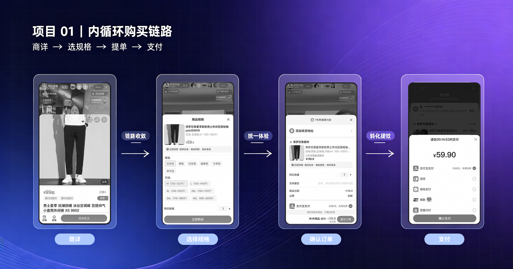
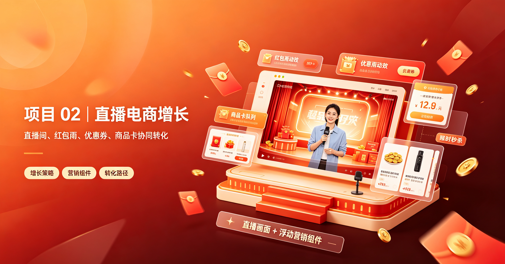
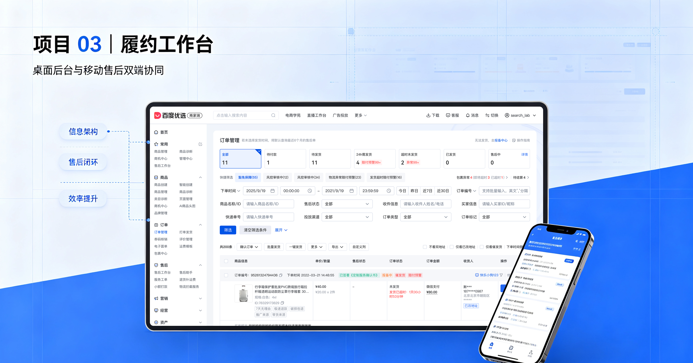
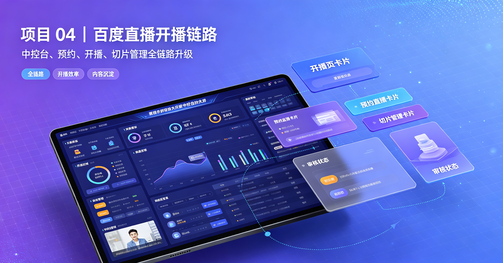
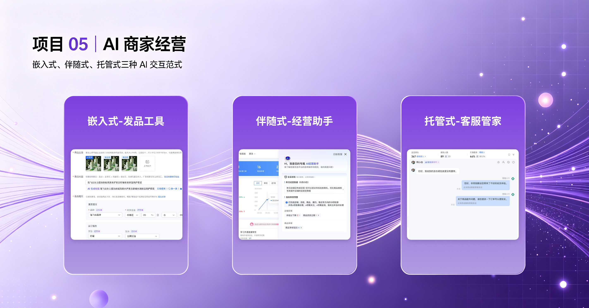
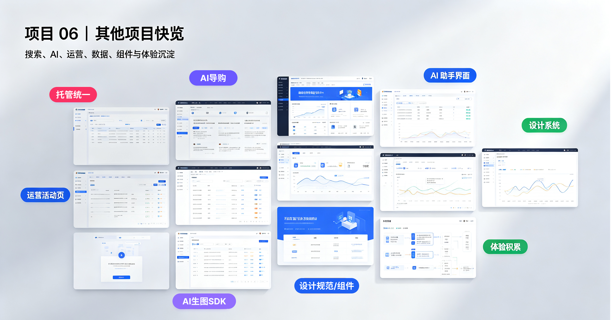

Experience design portfolio / 2022—2026
把复杂的
交易体验变得清晰。
我是李楠，一名深耕直播、商家经营与全域交易场景的体验设计师， 用设计提升转化、经营效率与商业增长。
SYSTEM
到体系化落地
01 / 关于
设计不只是
解决问题。
更重要的是，找到值得解决的问题，并把一次性的方案变成可复用的系统能力。
15 年体验设计经验，现专注于电商全链路。擅长从业务目标、用户体验和落地效率 三个维度协同思考，推动设计从单点优化走向体系化升级。近两年深耕商家管理后台 设计需求，持续探索 AI 赋能商家经营、提质提效的设计方法。
直播前、中、后完整覆盖，从机会洞察到上线验证。
围绕转化、效率与商业增长，建立设计和业务的共同语言。
主动发起专项，组织协作，沉淀方法、规范与可复用资产。
协调设计、产品、研发与业务伙伴，建立共识并推动方案高质量落地。

01 / 全域交易
内循环购买链路提转专项
收敛多场景购买框架，简化下单链路，建立统一的全域交易体验。

02 / C 端增长
直播电商 GMV 提转专项
围绕吸引力与氛围感，升级优惠券、红包雨和商品讲解卡等直播营销玩法。

03 / B 端提效
履约工作台 · 双端升级
围绕信息触达、精准筛选和操作路径，帮助商家更快发现并处理履约问题。

04 / B 端提效
百度直播开播链路体验升级
从主播反馈出发，补齐开播链路断点并重构实时中控体验。

05 / AI 赋能
全域商家 AI 体验体系
从散点分布到体系感知，构建嵌入式、伴随式、托管式三大范式。

06 / 项目快览
其他项目快览
搜索电商、AI 导购、设计资产与经营工具等项目的精选片段。
03 / 经历
在真实业务中，
持续把事情做成。
百度 · 资深体验设计师
负责电商 C 端增长、B 端经营提效与 AI 场景设计，主动发起体验专项并推动跨团队落地。
北京时连天下科技有限公司 · UX／交互设计师
负责产品体验与交互设计，持续积累互联网产品的全流程设计经验。
北京新媒传信科技有限公司 · 交互设计师
负责飞信 iOS 端功能交互设计，参与用户调研并推动体验方案落地。
北京理工大学 · 工业设计 · 硕士
系统学习设计与研究方法，建立以问题洞察和落地验证为核心的工作方式。
福州大学 · 工业设计 · 本科
建立工业设计基础，培养从用户需求到方案表达的系统设计能力。